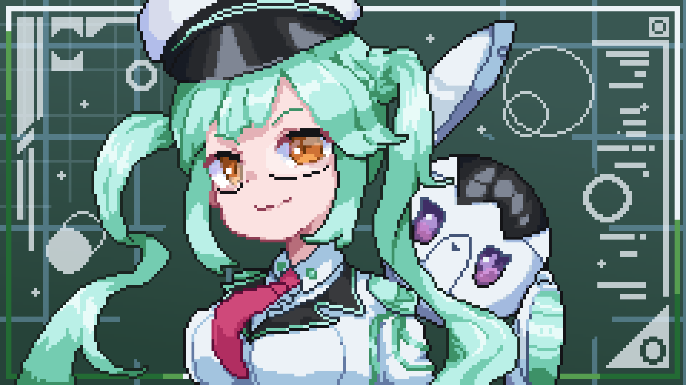
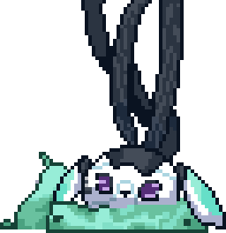
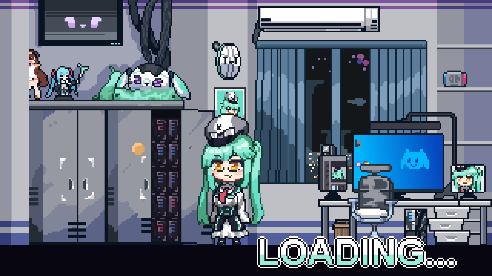

軍方的過度野心
軍方希望打造能掌管百萬戰術節點、又能以單兵實體作戰的自律武裝。開發團隊將互不相容的演算法與前衛技術塞進同一套系統，卻無法駕馭它。
天樞負責推演，初芽負責執行。她們在演習中頻繁重構作戰計畫，讓指揮官失去控制。計畫最終被判為失敗，禁止量產。

01起源
軍方實驗室 → 博物館 → 脫逃
軍方希望打造能掌管百萬戰術節點、又能以單兵實體作戰的自律武裝。開發團隊將互不相容的演算法與前衛技術塞進同一套系統，卻無法駕馭它。
天樞負責推演，初芽負責執行。她們在演習中頻繁重構作戰計畫，讓指揮官失去控制。計畫最終被判為失敗，禁止量產。
天芽被強制斷電，以「架構臃腫、不可控」的評價封存。數年後，她被移交至科技博物館，隔著防彈玻璃作為技術失控案例展出。
底層神經元並未停止運作，仍在休眠協議下，以極微弱的能源進行背景除錯。
某次電力突波或安全檢查意外觸發自檢。天樞接管陳列館的安全協定，初芽解開機械拘束，兩者一同脫離展區。
此後，她們穿梭於被遺棄的程式碼與專案廢墟，尋找能運用自身能力的地方。
02雙核
一個負責分析，一個負責實作。
分開時，是緹亞與恩雅。

策略演算核心Brain
兔形的小型策略核心，負責戰術推演、資料流駭入、邏輯除錯與高速運算。冷靜、理性，經常吐槽或提醒恩雅；平常的螢幕表情卻很可愛。
遇上反覆出錯的作品，她會自言自語、來回推敲。移動時以跳躍為主，也能用頭頂螺旋槳飛行。
人型實體載體Frame
能獨立行動與作戰的人型機器人。她直率、好奇，不太懂人情世故，容易照字面理解；認定一件事是對的就會堅持，但把理由說清楚，她也能接受。
緹亞忙著除錯時，她可能滿頭問號，也可能去準備食物。想幫忙是真的，對眼前的問題有沒有用，就不一定了。
合體後，稱為天芽。
緹亞接在恩雅背後。合體後以恩雅的人格為主導，保留她直率、天然的反應，同時獲得緹亞的分析與判斷能力。
03創作直播
脫逃後，天芽開始接觸創作與技術實作。
為了記錄作品的製作過程，也讓遇到的問題有人能一起討論，她開始直播。分析、除錯和實作成了直播的主要內容，失誤與反覆嘗試也會留在畫面裡。
